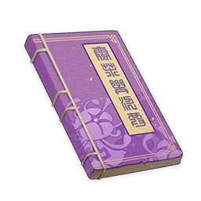

Liyue · Books & Literature
Linling's Anthology of Selected Poetry
Linling’s first self-published poetry collection covers cats, harbor scenes, and local food, with playful rhymes that reflect her wish for recognition.

The collection and its publication
Linling’s Anthology of Selected Poetry is a Quest Item obtained from the Liyue Daily Commission So-Called Work. Its description says Linling published the collection at her own expense, calls it her first publication, and notes that she is proud of it. The record identifies no separate editor or publisher.
The item is a small anthology of eight poems about familiar sights, people, and food in Liyue. It records Linling’s writing and ambitions; it is not presented as a historical account of the harbor.
Eight poems about everyday Liyue
The sequence moves from the household and workplace to the harbor and surrounding city. “Kitty” takes cats as its subject, while “Manager Xiao” turns the shipyard overseer into a comic portrait. “Ocean-gazing” and “Ocean-gazing Yet Again” return to the sea and to Linling’s feeling that her poems go largely unnoticed.
“The Streets by Night” notices the city’s lamps and food stalls; “Mt. Tianheng” praises the mountain as a barrier; “Spring by the Harbor” lingers over flowers; and “An Ode to Chop Suey” makes a meal the source of its humor. The poems’ recurring end rhymes and exaggerated comparisons suit these ordinary, local subjects.
A poet who wants recognition
Linling’s everyday dialogue introduces her as a registrar for the boats in Liyue Harbor and an aspiring poet who wants her work to be recognized. The anthology gives that ambition a concrete result: she has selected and paid to publish a collection, even though the book does not say how many copies sold or how readers received it.
The poems combine direct observation with self-conscious humor. Their playful tone is visible in the text, but the item description does not label them bad or clumsy, and the guide should not turn a reader’s taste into an in-game fact.
The commission behind the book
So-Called Work follows a previous commission in which the Traveler gives Linling incorrect ship numbers. She says she trusted the Traveler’s tally and submitted it without checking; Nervous An is angry because inaccurate harbor reports affect the work that depends on them. He does not fire her on the spot. Instead, he offers her a second chance: review a cargo manifest while the usual reviewer is unavailable.
Linling asks the Traveler to confirm the cargo counts, prepares to perform the more detailed review herself, and gives the anthology as thanks after the Traveler returns. The later conversation with Nervous An reveals the review was a test. The quest frames the problem as careless reporting, not as a punishment for writing poetry.
Work and creative ambition
The commission leaves Linling with a real need to improve at work and a continuing desire to write. She worries that losing her job would leave her unable to write in peace, while Nervous An explains why routine harbor figures still matter. Her conversation about work and dreams presents the two as competing needs she is trying to balance.
The anthology therefore works both as a literary object and as a character detail: Linling is proud enough of her poems to self-publish, but creative ambition does not excuse the mistake that prompted the commission. The story gives her a second chance and leaves her responsible for following through.
What the record does not establish
The item confirms publication and Linling’s pride, but does not establish that she became a famous poet, that the harbor community broadly mocked the collection, or that its poems are official histories. The Traveler receives it as a thank-you after helping with the cargo review.
One poem names a crying child as Changchang, but that name alone is not enough to make the scene a reliable account of the child’s identity. Keep the anthology’s jokes and observations inside its literary context unless another in-game source independently confirms a detail.
This is an original CoreGG reading guide, not an official HoYoverse article or a reproduction of the game text. Source links below identify the records used so you can check the original context.
Sources & references
Check these sources for the original game text and reference trail.